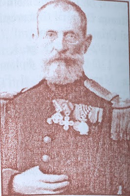

Forgeries made by Moroiu, obtained from https://www.marci-postale.com/FirstStamps/classics.htm
Alias Paul Paulescu - G.Matheesco
Return To Catalogue - Roumania
Note: on my website many of the
pictures can not be seen! They are of course present in the
catalogue;
contact me if you want to purchase it.

Constantin (Costica?) M. Moroiu was a forger from Romania in the 1890's. He published the first catalogue of Romania in 1886 (see below). He was also involved in the establishement of Freemasonry in Romania. He fought in the war against the Ottoman Empire and lived in Bucharest, Constanza and Mangalia. His name is listed as "Moriou C. Strada Morfei 27 Bucharest, Roumania" in the J.T.Hanford's International Stamp Collectors Directory of 1882.
According to "Philatelic Forgers, their Lives and Works" by V.E.Tyler, he made forgeries of the first stamps of Rumania (bull's heads of Moldavia of 1858, 1859 issue and 1862 issue). In this work, his name is (mis?-)spelt as Moriou.
He also made bogus Bull's head stamps in 1881 in the values 15, 45, 90 and 135 Parales. Images of these forgeries can be found on https://www.marci-postale.com/FirstStamps/classics.htm
Forgeries made by Moroiu, obtained from
https://www.marci-postale.com/FirstStamps/classics.htm
If I understand the Romanian website cited below correctly, he also made bogus local stamps for the town of Mangalia in 1883. He made two sets of four and eleven local stamps. Could these be the ship design stamps that are listed in the Forbin guide (although there are only 14 local fiscal stamps listed)?
In the Philatelic Record of 1889 (page 60) the
following text can be found:
Again, in our February number we mentioned that a
contemporary had been informed that the Roumanian stamps had been
printed during the months of November and December on paper of
various colours, of which we gave a list ; but last month we
omitted to mention that the Timbre-Poste, who it appears had
received the above information from a M. Moroiu, had been since
informed by the Inspector-General of the Roumanian Treasury that
those chronicled by us this month are alone authentic. The same
journal, in its number for the present month, prints the
following extract from the Independence Roumaine of the 10/22
March last: "Forged Postage Stamps.—Yesterday an
information of the gravest nature was laid before the prefecture
of police. It related to nothing less than the existence in the
centre even of the capital of a manufactory of forged postage
stamps. "The forger informed against answers to the name of
Moroiu, a captain on the retired list. "Colonel Algin,
prefect of police, charged M. Carlova, director of the police, to
commence the investigations and ascertain if there was any
foundation for the information. After some preliminary,
inquiries, M. Carlova was convinced that something suspicious was
passing at the house of Captain Moroiu, and informed MM.
Boldur-Voinesco, first procurator, and Papp, examining judge, and
all three proceeded to the house of Moroiu. "At the first
search they found a considerable quantity of unused stamps. On
Captain Moroiu being asked where they came from, he replied, that
he was a great collector of stamps, which he sold to amateurs at
home and abroad, and that if they appeared new he had coloured
them. The magistrates seized the stamps, and then proceeded to
the Post-office and to the Mint, where the postage stamps are
manufactured. At this latter they were told that the stamps were
not forged, but that the colours only had been changed.
"Nevertheless, in the evening a person advised M. Carlova to
continue his search at the house of Captain Moroiu, assuring him
that he would find in a certain place indicated by him a large
number of dies for the manufacturing of postage stamps, Roumanian
as well as foreign. MM. Papp, Boldur-Voinesco, and Carlova made
another search this morning and found about 200 dies. There was
one even for the fabrication of stamps of Buenos
Ayres. Captain Moroiu, thus found in open
violation of the law, made a full confession, and was
incarcerated at Vacaresti." To this the Timbre-Poste adds
its regret that the parquet was not able at the same time to
seize the dies, which serve for the manufacture of the stamps of 27,
54, 81, and 108 paras, that are affixed to
letters or papers, and which the Philatelic Society of Bucharest
declare to be authentic on signed certificates, and with which so
many amateurs allow themselves to be taken in.
Moroiu send a letter to The London Philatelist in
1902 under the name Paul Paulescu which was
reproduced in the article 'The reprints of the first and second
issue of Moldavia' by M.P.Castle (The London Philatelist, Volume
11, page 215-216):
“ I daily receive letters from correspondents asking me
if reprints of the stamps
of Moldavia exist. In order to satisfy the curiosity of all
collectors, I now reply once
and for all.
“ The stamps of Moldavia were first printed in 1858 (sic) in
the circular type, the dies being engraved on steel. After the
1st of November these dies were enclosed in an iron box, and
deposited at the Ministry of Finance. This box was re-found (sic)
in 1882 ; it contained the dies of the circular stamps 27, 54,
81, and 108 parales (sic), and five other dies, being 1 of the 5
paras, 3 of the 40 paras, and 1 of the 80 paras, engraved on
steel and eaten into by rust.
“ On the occasion of the Jubilee of the King, in 1891, the
late Colonel Gorjan, Director of the Post, was desirous of
reprinting them, but as the majority of these dies were in bad
condition, he caused a small number of the following values to be
reprinted: 27, 54, 81, 108, and 5 paras, the other dies being
unfit to be made use of.
“ These stamps were reprinted by hand.
“ The 27 paras on pale rose thick paper.
“ The 54 paras on dark green paper; impression in greenish
blue.
“ The 81 paras, blue, grey-blue (sic), on thin laid azure
paper.
“ The 5 paras, blue (sic), on pelure lilac-rose paper.
“ The die of the 27 was a little rusted on the right side,
showing interstices.
“ The die of the 54, being better preserved, was very
successful.
“ The 81 paras, being also well preserved, succeeded very
well, but the colour of the ink being very pale, it appears
grey-blue instead of blue.
“ The 108 being rusted, the circumference (sic) of the right
side is broken into from the letter ‘ o ’ to the
post-horn. It is printed on lilac-rose paper.
“ The 5 paras was also rusted on the left side, where the
inscription ‘ PORTO’ exists and the base-line is also
broken into (entrecoupee).
“ Colonel Gorjan, seeing that the reprinting was not
successful, destroyed the majority of these stamps after having
distributed a small number to his friends and acquaintances.
“ Last year the workman— Jon Popp— who made the
reprints sold several specimens to two or three collectors who
were intimate friends.
“ According to the information that has been given to me by
Popp, there have been only reprinted in all: 50 copies of the 27
paras, 30 of the 54, 30 of the 81, 20 of the 108, and 100 of the
5 paras.
“ The Directors of the Post have declined to make a second
reprint on account of the state of the dies, which are entirely
eaten into by rust.
“ This is all that I know positively about these reprints,
which have disappeared, and which are more difficult to find than
the stamps of the first issue, which one still meets with here
and there among old collectors. “ Agree, etc.,
“ PAUL PAULESCU .”
However, in The London Philatelist
(http://archive.org/stream/londonphilateli121903roya/londonphilateli121903roya_djvu.txt)
of 1903, it is stated that Paul Paulescu is actually Paul
Focseaneanu, a dealer not of the highest reputation ("a
species of chicanery of the very first order"). Another
letter from G.Matheesco appears in the same journal in 1902 Vol
11, page 285 confirming the existence of reprints followed by a
letter by C.M.Moriou to offer these stamps. According to
Philatelic Forgers, their Lives and Works by V.E.Tyler, Moriou,
Paulescu and Matheesco are all the same person. Here the text of
the letter of Moriou in The London Philatelist:
“ Bucharest, 11th (24th) October, 1902.
“ SIR ,— I have seen in the London Philatelist and the
Echo de la Timbrologie your article on the Moldavian reprints. I
f you are a purchaser I can offer a copy of each value as
follows:— 27 paras, £ 10 ; 54 paras, £ 10 ; 81 paras, £
25 ; and 108 paras, £ 20 ; also the 5 paras, black on white,
10s., and the same on very blue paper, £ 20 . If you desire to
purchase these stamps, I will send them stamped with my guarantee
on the reverse side.
“ As I only possess a few specimens, if I do not hear from
you within ten days 1 cannot keep them. “ Yours, etc. etc.,
“ C. M. MOROIU. 6, Morfeu Bucharest
Sources:
http://www.newspad.ro/Creatorul-francmasoneriei-romanesti-falsificator-de-marci-postale,45107.html
http://unglr130.blogspot.com/2010/08/constantin-moroiu.html
C.M.Moroiu; Timbres de Roumanie, Catalogue Generale. Bucharest,
1886 (26 pages, I haven't seen this book myself)